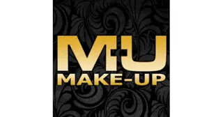
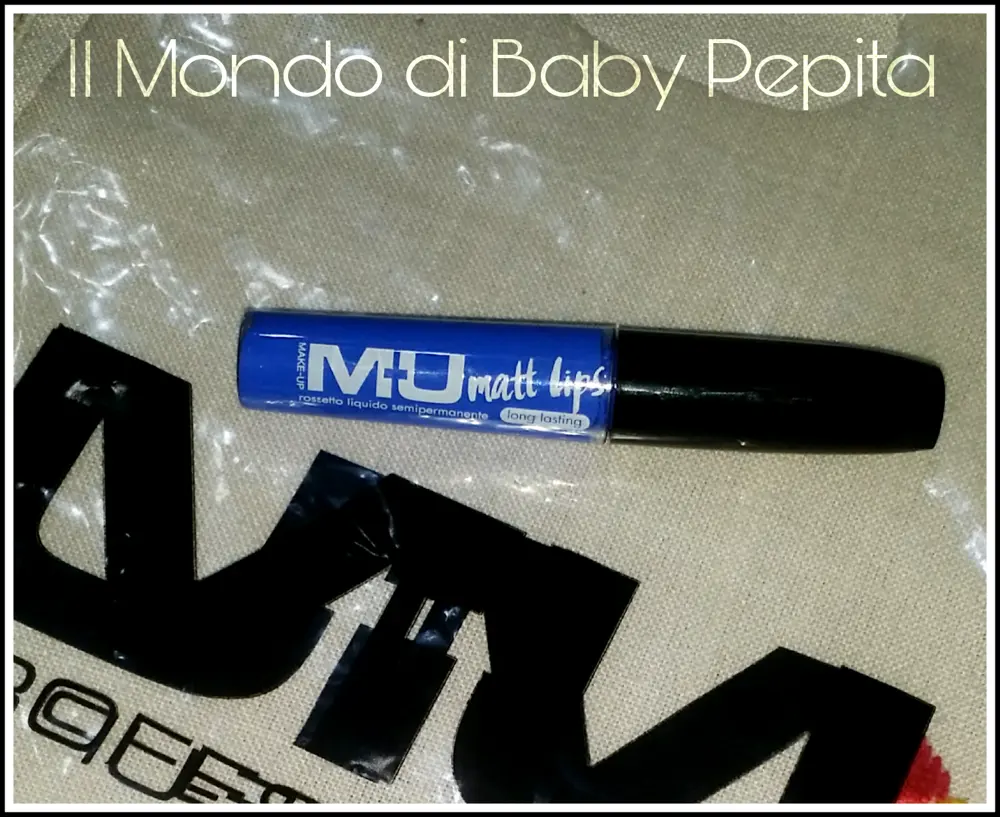
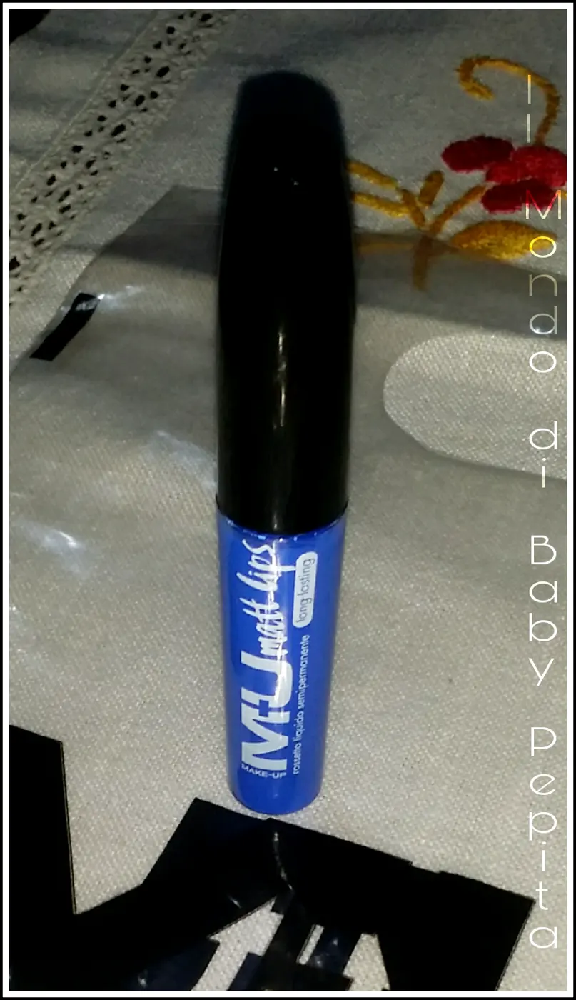
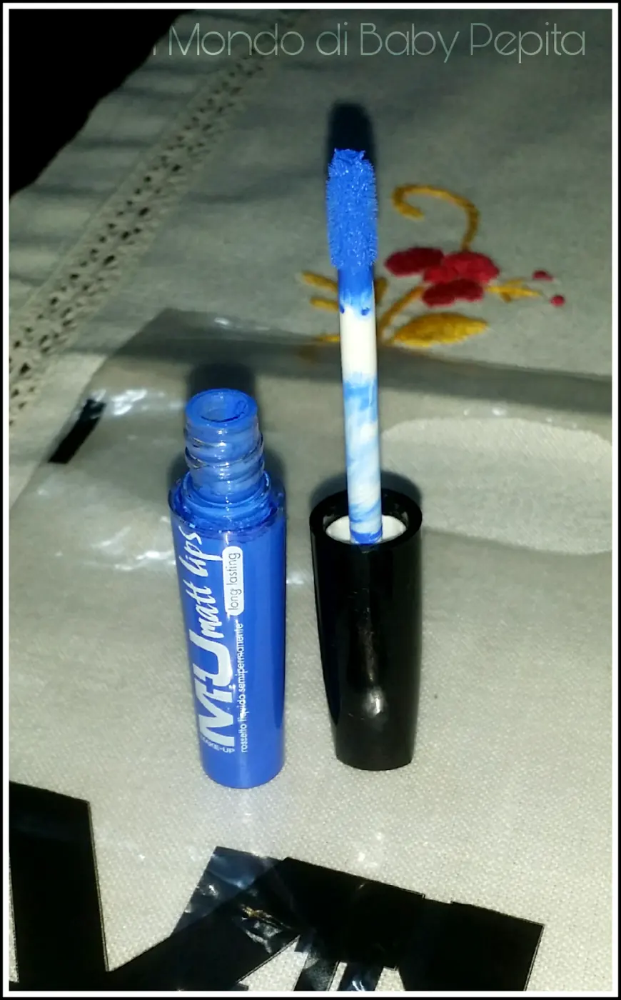
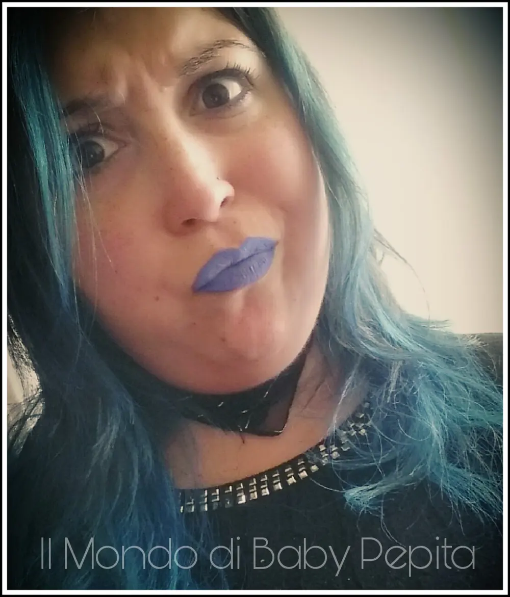
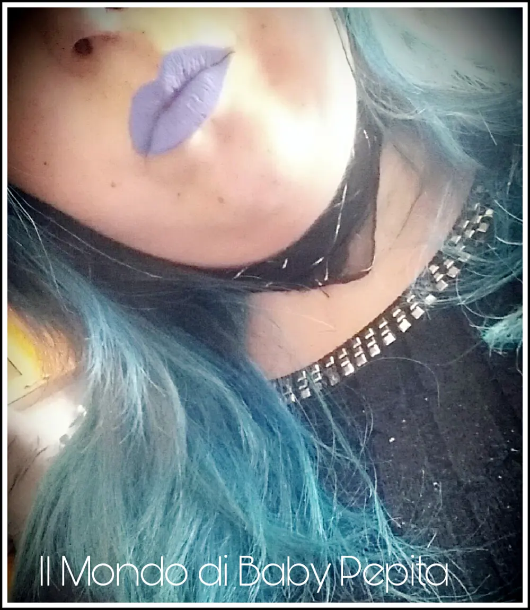
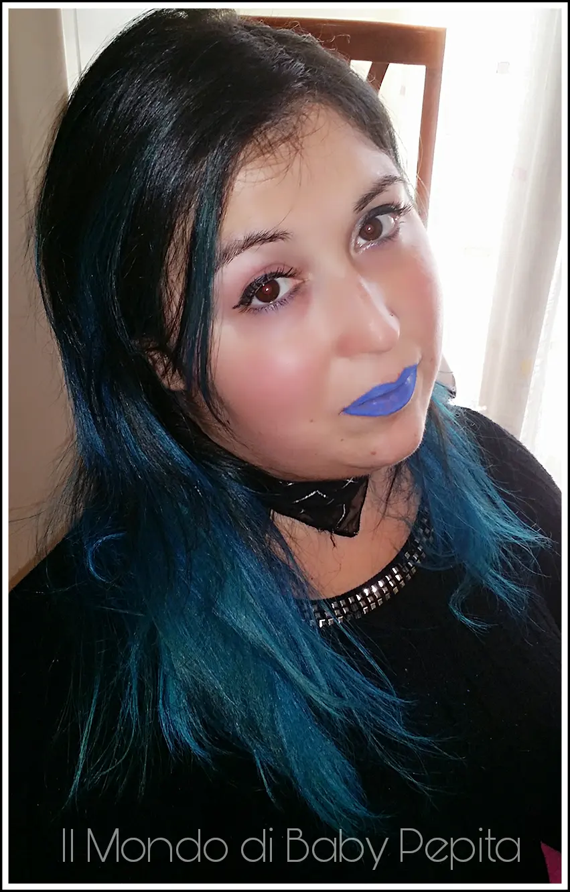
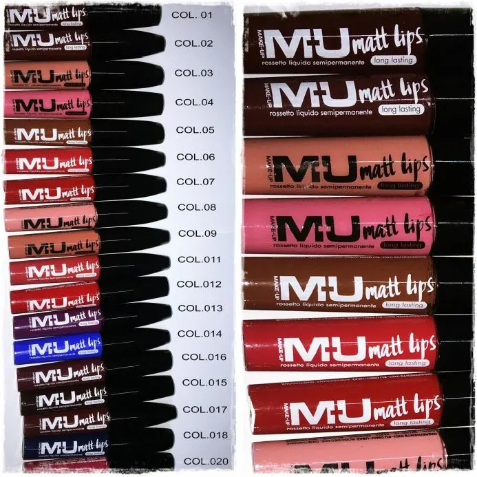

MU Makeup - il mio rossetto blu

Avete mai osato con colori davvero strong? Tipo colori eccentrici che mai avreste pensato di indossare?
Per esempio un rossetto pazzo come il nero, il verde, il grigio o il blu?

Beh, per quanto riguarda il grigio e il nero sinceramente non sono ancora molto propensa. Il grigio lo vedo molto bene sulle bionde. .
Io presa dalla follia dei miei ormai celebri capelli blu fatti ultimamente, ho deciso di comprare un rossetto blu.

Avrei potuto fare con una matita occhi l'effetto rossetto ma non sarebbe stato un bel risultato in quanto essendo un colore forte, si sarebbero viste pieghette e labbra poco idratate. Ho optato quindi per un rossetto. .
Ho volutamente optato per un marchio non costoso e che mi permettesse di avere un risultato bello lo stesso.
Ho quindi acquistato una tinta labbra in una profumeria della MU makeup. .
Un marchio nato da poco più di un anno, avrete sicuramente notato qualche volta sui profili di Cecilia Rodriguez (testimonial del brand).


Ahimè però questa volta sono rimasta insoddisfatta sia della resa che del colore.
Come potete vedere il tubetto è un bellissimo blu cobalto, bello acceso.
Mi sarei aspettata quanto meno un blu normale, non eccessivamente acceso come nel tubicino ma che almeno desse un colorito alle labbra di un bel blu. Invece ho ottenuto un celeste - viola.

Non saprei identificare il vero colore.
(Vi posto varie foto anche di un paio di posizioni diverse per farvi vedere come un realtà è).
La durata:
Non mi è piaciuta nemmeno quella, a parte che è secco. Io lo vedo più come un ombretto liquido piuttosto che rossetto a dire il vero. È un pò pastoso e secca le labbra.
Ho così utilizzato, una seconda volta il rossetto, intensificando di più il colore con più prodotto e utilizzando sopra un lucido liquido.
E solo così si sono idratate un pò le labbra sembrando un pò più morbide.
Per la durata beh, dopo un'ora al centro delle labbra già non c'era più. Insomma, se volete un prodotto che duri non vi consiglio di acquistare questo tipo di rossetto.

ATTENZIONE PERÒ, io vi sto parlando adesso nello specifico di questo tipo di linea di questo brand e cioè dei Matt lips Long lasting.

Vi dico ciò perché ho acquistato anche un altro rossetto di una linea diversa di questa marca e quello è davvero bello.
Poi ve ne parlerò in questi giorni.
Quindi diciamo che hanno formulato una linea non propriamente duratura e di una textura non proprio perfetta.
Ma ci può stare. .
Prezzo: 4,00 €
Ditemi la vostra, avete avuto l'occasione di acquistare qualche colore di questa linea? Come vi siete trovati?